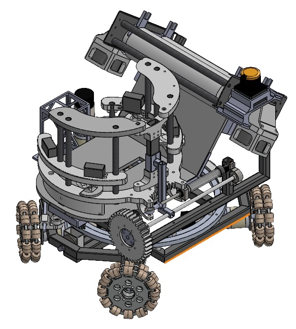
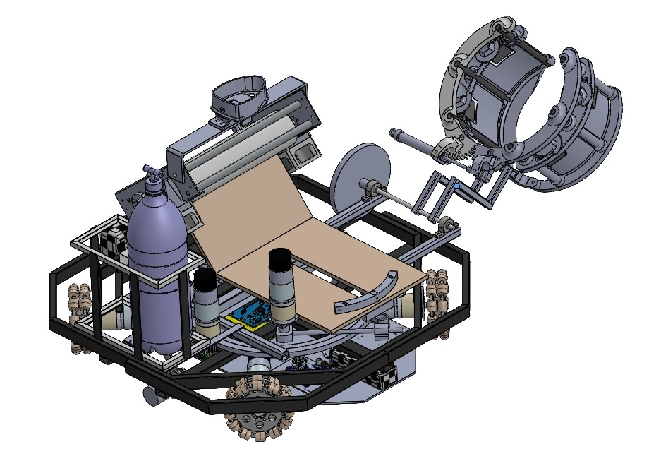

About Me
Hello! I'm Hari Prasad Gajurel, a Mechanical Engineer with a strong interest in both theoretical and applied problems in control theory and AI/ML.
I am genuinely astounded by "The unreasonable effectiveness of mathematics as the language of nature" (Eugene Wigner). This drives my passion for the software implementation of theoretical ideas, 3D CAD design, and embedded systems. To me, engineering is about optimizing parameters to obtain the best result.
Research Projects

Figure 1: Model-Based Control System Architecture

Figure 2: Prototype Bench-top Testing & Design
Traditional prostheses are incapable of fully aiding in human locomotion, resulting in amputees with asymmetric gait patterns, and small stride lengths. Powered prostheses can improve mobility, comfort, and quality of life for amputees of the lower extremities. This project focuses on the design and benchtop validation of a prototype of a powered ankle foot prosthesis. The PAFP utilizes a belt-pulley transmission, driven by an AK-60-6 actuator, and integrates an STM-32 micro-controller to facilitate communication among sensors which includes IMU, encoder, and motor controller in real time. A series of benchtop tests were conducted on the setup to validate the transmission efficiency, control and structural functionality. Experimental validation included backdrivability tests to assess compliance and loading tests to evaluate the motor's torque response to external load. Finally, position tracking was performed to replicate the natural ankle pitch angle profile observed in human gait.
Links and Results:
• GitHub Code of mathematical Modelling : Modelling
• Result : Report

Figure 1: Sanosat-2.1 Architecture
Figure 2: Prototype & COTS Components
PocketQubes are picosatellites with a form factor of 5 cm × 5 cm × 5 cm and a mass not exceeding 250 g. They are designed for specialized missions with limited time periods and typically contain only small volumes of payloads. Due to constraints in size and mass, the design process of PocketQubes can be challenging. This paper focuses on the cost-effectiveness of the design and development of Sanosat-2 for a Low Earth Orbit (LEO) mission using commercial off-the-shelf (COTS) components to provide a comprehensive understanding of the design process and applications. Following the de-orbit of Sanosat-1 on the Feb-7,2024 March, Sanosat-2 is designed with significantly improved sensing capabilities, primarily using optical payloads such as cameras and Sun sensors developed using COTS components at ORION Space Lab. The satellite is equipped with a camera for imaging, an Inertial Measurement Unit (IMU) for navigation, and Sun sensors as the primary payloads. Sanosat-2 aims to acquire orbital data through Sun sensors and the IMU for more advanced Attitude Determination and Control System (ADCS) missions. The satellite also functions as a digital amateur radio repeater. Furthermore, Sanosat-2 demonstrates the transmission of images captured from orbit via SSDV packets using GFSK modulation with a dipole antenna, and showcases deployable solar panels and passive ADCS control using magnets to highlight low-cost PocketQube fabrication. The PocketQube is expected to switch between different data rates for various payload data and imaging requirements. The data collected by Sanosat-2 will benefit researchers and industries in areas such as orbit modeling, network design for IoT applications, satellite constellation design, and the reliability assessment of COTS components for advanced satellite missions. The satellite data and behavior transmitted to the Earth station will enable the creation of digital twins for various LEO missions.
Undergraduate Projects + Research
Spring 2024 - Fall 2025
[[Final Project Report]]
Mathematical Modeling, CAD design, and benchtop testing for an active foot prosthesis capable of natural gait pattern tracking.

Control Architecture

IMU Feedback

Loadcell Feedback
2023
[[Video]]
Designed and manufactured the robot mechanism; conducted stress analysis and optimization for performance reliability.


2023
Winner, Dronacharya Competition (Locus)
Mathematical modeling (MATLAB), hardware selection, and assembly of a custom drone.
2022
Algorithm Implementation
Implemented Dijkstra's algorithm in C++ for shortest-path autonomous navigation.
Outreaching & Volunteering
-
[Volunteering Role / Event] [Date][Organization/Club]
(Content to be added. This section can showcase leadership roles, mentorship, or community service.)